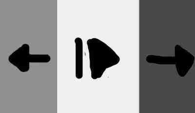

Problemática
En los últimos años, la telefonía móvil ha evolucionado hasta tal grado que es difícil concebir la vida sin ella ya que nos otorgan una larga lista de beneficios que conllevan desde las más sencillas tareas de oficina hasta complejos cálculos matemáticos. Generalmente el uso que se le dan a los dispositivos móviles van enfocados en el entretenimiento y las comunicaciones, pocas veces se utilizan con un fin profesional o fuera de los mencionados usos comunicativos.
No hay que olvidar que los dispositivos móviles son computadoras de bolsillo, computadoras capaces de otorgarnos un entorno virtual y de información casi instantánea que jamás se había visto en la historia de la humanidad.
Es por lo anterior que el desarrollo de aplicaciones para éstos dispositivos ha crecido como la espuma resolviendo problemas e incluso necesidades que las personas podamos tener, sin embargo a pesar de que pueden encontrarse aplicaciones móviles destinadas a las personas con discapacidad visual, éstas no son encontradas con facilidad o, en su defecto, unicamente tienen un fin puramente económico y comercial y realmente su uso no explota los dispositivos en los cuales se encuentran.
Para resolver ésta problemática propongo la elaboración de una aplicación móvil especializada en los débiles visuales que les ofrezca no solamente una mejor calidad de vida en su día a día sino también una nueva forma de comunicarse y ser tomados en cuenta un poco más, se trata de dar una voz más fuerte a las personas que no cuentan con la accesibilidad requerida y que seguramente tienen mucho que contarnos.
Introducción
Es bien sabido que el desarrollo de aplicaciones móviles ha tenido un crecimiento considerable en los últimos años que va de la mano con la aplicación y aprendizaje de lenguajes de programación especializados en ello. Tales lenguajes de programación explotan las capacidades del hardware en el que corren con el fin de abrir un abanico muy amplio de opciones a los desarrolladores. Tomé en cuenta que el sistema operativo móvil más accesible en la actualidad es “Android” en sus múltiples versiones, desde la versión 4.0 hasta la 10.0 las aplicaciones móviles pueden correr con fluidez y con un sustento de batería óptimo que depende de la aplicación misma.
Para ello la aplicación no tiene una interfaz visual compleja ya que se basa en pulsaciones de unicamente tres botones. Es por lo anterior que la casi nula interfaz gráfica se deja de lado liberando gran capacidad de procesamiento hacia lo importante: el contenido.
Desarrollo de la interfaz visual
Como mencioné en la introducción la aplicación no tiene una interfaz gráfica compleja, sino simplemente tres opciones que pueden también ser reemplazadas por los botones de subir y bajar volumen a conveniencia del usuario es decir, los botones son los siguientes: “→” Botón de avance de opción. Éste botón se puede reemplazar por el botón de bajar volumen (-) “←” Botón de retroceso de opción. Éste botón se puede reemplazar por el botón de subir volumen (+) “>” Botón de acción o de “Ok”. Éste botón se ́puede reemplazar por el botón de subir volumen (+) oprimido por dos segundos.
La interfaz gráfica consta de dividir la pantalla de dispositivo móvil en tres secciones quedando de la siguiente manera:
Previamente se sugiere que una persona sin capacidades visuales limitadas ayude a configurar la interfaz, para ello se menciona que entre cada intersección se coloquen ligas, una cinta de papel o cinta adhesiva con el fin de que la persona con discapacidad visual pueda “sentir” en donde queda cada intersección. Cada botón suena con un timbre en especial, tanto si se desea usar la interfaz como si se desean utilizar los botones de subir o bajar volumen, es decir , hay un sonido para notificar “avance”, otro para “Retroceso” y uno final para “OK”. La interfaz auditiva es la interfaz dominante en la aplicación ya que todas las opciones constan de menús que son dictados por una voz virtual, es por lo anterior que el uso de audífonos es recomendable si se desea utilizar la aplicación en lugares públicos.
Interfaz Auditiva
La interfaz auditiva conlleva una serie de submenús que dotan de sentido a toda la aplicación y que pueden ser manejados por los controles de la interfaz visual y sus derivados con los controles de subir o bajar volumen. Para ello al comenzar la interfaz una voz virtual (tipo Siri, Cortana, Google) dicta las opciones del menú y espera tres segundos para pasar a la siguiente si el usuario no oprime el botón “→” o “←”, la opción deseada es confirmada con el botón de “ok” ( > ).
El menú que la interfaz auditiva dicta tiene las siguientes opciones:
1.-Música: Esta opción permite reproducir la música guardada en el dispositivo, la voz va dictando el nombre de cada una de las canciones y las reproduce si el usuario lo desea, para ello la voz guía dice:
El botón de regreso siempre está activo si se desea regresar al menú anterior.
2.-Redes sociales: Se ofrece una aplicación de redes sociales especialmente dedicada a las personas con discapacidad visual y enfocada en las conocidas “notas de voz” en donde tanto las publicaciones como los comentarios se basan en las mismas. Por ejemplo, una publicación sencilla sería: “Hoy visité el restaurante italiano al que quería ir desde hace mucho y sirven una sopa increíble” a lo que en los comentarios podríamos escuchar : “Me alegra mucho, puedes decirme la ubicación?”. De igual manera podrían crearse grupos de intereses en común con las opciones que los usuarios utilizan comúnmente en las redes sociales tradicionales tales como: compartir, comentar, crear grupos, dar me gusta, seguir, agregar amigo. Etc. Se adjunta a éste documento una explicación detallada más adelante.
3.- Contactos: La aplicación de contactos dicta una lista de contactos guardados para que el usuario seleccione uno de ellos con el fin de comunicarse, ya sea hacer una llamada o enviar un mensaje de texto (SMS) Para ello la voz guía dicta las siguientes opciones:
-“App de contactos” -pip -”Llamar a un contacto -pip -”Enviar mensaje a un contacto” -pip -”Agregar contacto” -pip -”Eliminar contacto” -pip -”Regresar al menú principal” -pip
3.1.- Llamadas (Cuando se selecciona la opción “Llamar a un contacto”) La aplicación dicta un submenú con la voz guía que dicta lo siguiente: -”Llamadas perdidas” -pip -”Realizar llamada” – pip -”Elegir contacto -pip -”Andrea” -pip -”Juan” -pip -”Daniela” -pip -”Eligió llamar a Andrea” -pip (Comienza la llamada) -”Cambiar tono de llamada” -pip
3.2.- Mensajes (Cuando se selecciona la opción de “Enviar un mensaje a contacto”) La aplicación dicta un submenú con la voz guía que menciona las siguientes opciones: -”Mensajes recibidos” -pip -”Usted tiene un mensaje de Juan -pip -”El mensaje dice” -pip -”Hola, vienes a casa a comer hoy?” -pip -”Desea repetir el mensaje?” -pip -”Desea responder el mensaje?” -pip -”Grabe su mensaje después del tono” -pip -”Desea escuchar su mensaje?” -pip -”Desea grabar de nuevo su mensaje?” -pip
-”Desea eliminar el mensaje?” -pip -”Hacer mensaje” -pip -”Seleccionar contacto” -pip -”Andrea” -pip -”Juan” -pip “Daniela” -pip -”Seleccionó a Daniela -pip -Grabe su mensaje después del tono -pip (El mensaje que se grabe por voz al utilizar el micrófono del dispositoivo será convertido a texto por el sistema y se enviará como SMS al contacto seleccionado”) -”Su mensaje es el siguiente” -pip -”Hola, voy a ir a comer con Juan” -pip -”Desea escuchar de nuevo su mensaje? -pip -”Desea eliminar y grabar de nuevo su mensaje?” -pip -”Desea enviar su mensaje? -pip
Como se puede ver en el menú se ofrece todo un árbol de opciones en el que se basa el sistema, cada opción está ligada al botón de “regresar” con el fin de que se pueda volver al menú anterior para escuchar las opciones anteriores.
4.- Grabar recordatorio: Con ésta aplicación se pretende hacer un “Block de notas” a través de recordatorios de voz, es decir, el usuario puede grabar recordatorios o notas de voz con el fin de recordar información de relevancia. Para ello se ofrece el siguiente submenú: -”App Grabación de recordatorios” -pip -”Grabar recordatorio” -pip -”Grabe después del tono” -pip -”Desea guardar su recordatorio?” -pip -”Desea escuchar su recordatorio?” -pip -”Desea eliminar su recordatorio?” -pip -”Desea volver al menú anterior?” -”Escuchar recordatorios” -pip -”Recordatorio 1” -pip -”Recordatorio 2” -pip
-”Eligió escuchar el recordatorio 2” -pip -”El recordatorio 2 dice” -pip -”Recordar llevar la ropa a la lavandería” -pip -”Desea eliminar el recordatorio?” -pip -”Desea guardar el recordatorio?” -pip -”Desea volver al menú principal?” -pip
5.- Tiempo / clima: La aplicación del tiempo o clima simplemente ofrece al usuario la información del clima de su ciudad y ofrece el siguiente menú: -”App de clima” -pip -”Clima de hoy” -pip -”Hoy hay 20 grados centígrados por la tarde, se esperan lluvias por la noche” -pip -”Desea volver a escuchar?” -pip -”Desea regresar al menú anterior?” -pip -”Clima de mañana” -pip -”Mañana habrá 19 grados centígrados, no se esperan lluvias” -pip -”Desea volver a escuchar?” -pip -”Desea volver al menú anterior?” -pip
6.- Hora: Ésta aplicación simplemente le dice la hora al usuario y ofrece el siguiente submenú: -”La hora actual es: Ocho con treinta y nueve minutos, pm” -”Desea cambiar la hora?” -pip -”Diga la hora después del tono” -pip -”Diga los minutos después del tono” -pip -”Es am o pm?” -pip -”La hora que ajusto es la siguiente: Ocho con cuarenta minutos pm” -pip -”La hora es correcta?” -pip -”Desea ajustarla de nuevo?” -pip -”Desea volver al menú principal?” -pip
7.- Estado de la batería: Ésta aplicación dice el estado de la batería al usuario y ofrece el siguiente submenú: -”El estado de la batería es del 70 porciento” -pip -”Desea volver al menú anterior?” -pip
8.- Números de emergencia: Ésta aplicación dicta los números de emergencia conocidos y los ofrece al usuario en caso de alguna emergencia: -”Números de emergencia -pip -”911” -pip -”Bomberos” -pip -”Policía” -pip -”Llamando a policía” -pip -”Agregar número de emergencia personalizado” -pip -”Elija un contacto de emergencia” -pip -”Andrea” -pip -”Daniela” -pip -”Eligió a Daniela como su número de emergencia” -pip -”Desea volver al menú principal?” -pip
9.- Calculadora Simple: Aplicación de calculadora por medio de comandos de voz, se ofrece el siguiente submenú: -”App de calculadora” -pip -”Mencione la operación que desea relizar” -pip -”Su operación es “trece menos cuatro” y la respuesta es “nueve” -pip -”Desea regresar al menú principal?” -pip
10.- Escritura: Ésta aplicación es similar a la aplicación de recordatorios, con la diferencia de que lo grabado se transcribe a texto con el fin de que se pueda exportar un archivo .txt del dispositivo para imprimir o con los fines que el usuario desee.
-”App de escritura” -”Grabar texto nuevo” -pip -”Grabe después del tono” -pip -”Desea guardar su escrito?” -pip -”Desea eliminar su escrito?” -pip -”Textos guardados” -pip -”Texto 1” -pip -”Texto 2” -pip -”Desea escuchar su texto? “ -pip -”Desea eliminar su texto?” -pip -”Desea volver al menú anterior?” -pip
11.- Lectura (Audiolibros): Esta aplicación está basada en reproducir archivos de audio con contenido literario o bien los llamados “Audiolibros” para ello se ofrece el siguiente submenú: -”App Audiolibros” -”Lista de libros” -pip -”El principito” -pip -”Don Quijote” -pip -”Desea continuar donde lo dejo? -pip -”Desea comenzar de nuevo? -pip -”Desea volver al menú anterior? -pip -”Tienda de libros” -pip -”Títulos populares” -pip -”Cuentos Edgar Allan Poe” -pip -”Drácula” -pip -”Drácula tiene un costo de cero pesos” -pip -”Desea comprar Drácula?” -pip -”Su descarga está en curso” -pip -”Se ha completado su descarga, encontrará el artículo en su colección” -pip -”Búsqueda de títulos” -pip -”Desea volver al menú anterior?” -pip
-”Búsqueda por nombre” -pip -”Búsqueda por autor” -pip -”Mencione el nombre del autor después del tono” -pip -”Se encontraron tres resultados para Paulo Coelho” -pip -”El alquimista” -pip -”Verónica decide morir” -pip -”Ser como el río que fluye” -pip -”Este audiolibro tiene un costo de 90 pesos” -pip -”Desea comprar este audiolibro? -pip -”Su compra se está procesando” -pip -”Su compra se realizó con éxito, encontrará el artículo en su colección” -pip -”Desea regresar al menú anterior?” -pip
Cómo se puede ver, en ésta aplicación se han incluido las compras y las búsquedas, para ello el usuario previamente ha agregado una tarjeta a su cuenta de Google Play con el fin de realizar compras en la aplicación. La búsqueda y el alojamiento de títulos se mantiene en servidores dispuestos a éste fin para facilitar tanto la compra como la venta y distribución de artículos no solamente literarios sino también de aplicaciones como veremos en siguientes capítulos.
12.- Cámara: La aplicación de cámara permite al usuario tomar una fotografía o un video con el dispositivo en el momento que lo requiera, está pensada para personas con discapacidad visual que sean hábiles en algún arte y deseen compartirlo con el mundo o con sus seres queridos haciendo uso de las ventajas que la multimedia ofrece en el mundo actual. Para ello se ofrece el siguiente submenú: -”App de cámara” -pip -”Hacer fotografía” -pip -”Hacer foto manual” -pip -”Con la cámara frontal” -pip -”Tome su dispositivo en su mano y apúntelo hacia usted, oprima el botón de “ok” cuando desee tomar la foto” -pip -”Con la cámara trasera” -pip -”Oprima el botón “ok” cuando desee tomar la foto” -pip -”Establecer temporizador para la cámara delantera” -pip
-”Establezca el tiempo que desee” -pip -”Cinco segundos” -pip -”Diez segundos” -pip -”Eligió diez segundos, coloque el dispositivo mirando hacia usted en una superficie plana y oprima el botón ok para que comience el conteo del temporizador” -pip -”Veinte segundos” -pip -”Desea regresar al menú anterior?” -pip -”Grabar video” -pip -”Grabar video manual” -pip -”Con la cámara frontal” -pip -”Tome su dispositivo en su mano y apúntelo hacia usted, oprima el botón de “ok” cuando desee comenzar a grabar y cunado desee parar la grabación” -pip -”Con la cámara trasera” -pip -”Oprima el botón “ok” cuando desee comenzar a grabar así como cuando desee detener la grabación” -pip -”Establecer temporizador para la cámara delantera” -pip -”Establezca el tiempo que desee” -pip -”Cinco segundos” -pip -”Diez segundos” -pip -”Eligió diez segundos, coloque el dispositivo mirando hacia usted en una superficie plana y oprima el botón ok para que comience el conteo del temporizador, oprima el botón ok para dejar de grabar” -pip -”Veinte segundos” -pip -”Instrucciones para usar ésta aplicación” -pip -“Para tomar fotografías navegue en las distintas opciones del menú, las fotos se guardarán en la carpeta del dispositivo, para grabar video navegue en las distintas opciones del menú, oprima el botón “ok” para iniciar o detener la grabación” -pip -”Desea volver al menú anterior? -pip
13.- Tienda de Apps: La tienda de aplicaciones dentro de la aplicación abre casi infinitas opciones para que los desarrolladores programen aplicaciones dedicadas a los comandos de voz, como en las aplicaciones que hemos visto hasta ahora. Para ello las opciones de compra y publicación serían similares a las ofrecidas por GooglePlay, con el fin de encontrar opciones interesantes y diversas enfocadas en la mejora de la calidad de vida de las personas con debilidad visual. Para ello se ofrece el siguiente submenú: -”Tiende de apps” -”Apps instaladas” -pip -”Metro y metrobús” -pip -”Escanear códigos de barras de productos para saber su caducidad e información nutrimental” -pip -”Podcast” -pip -”Apps populares” -”Metrobús” -pip -”Mapas” -pip -”Desea escuchar la descripción de la aplicación llamada “Mapas”?” – pip -”Ésta aplicación ofrece la ubicación detallada del dispositivo, así como agregar destinos de viaje” -pip -”Desea comprar la aplicación?” -pip -”Ésta aplicación tiene un costo de cero pesos” -pip -”Desea continuar con la compra?” -pip -”Su descarga está comenzando” -pip -”Su descarga se completó con éxito, la encontrará en sus apps instaladas” -pip -”Desea volver al menú anterior?” -pip -”Estilo de vida” -pip -”Deportes” -pip
14.- Utilidades: En el menú podemos encontrar aplicaciones tales como “Metro y metrobús” donde el usuario puede escuchar la estación en la que se encuentra, en éste menú no desglosamos la aplicación ya que ésta sección se trata de mostrar la aplicación de “Tienda de aplicaciones”, sin embargo en el apartado de “Ideas” de éste texto pueden encontrarse el desglose de éstas aplicaciones.
15.- Cofiguración: Ésta opción abarca la configuración recomendada para el uso de la aplicación, en ella se encuentra la configuración de fecha, hora, seguridad Etc. así como el volumen de la interfaz. En las instrucciones iniciales se le indica a una persona sin problemas visuales que configure el dispositivo móvil de manera estándar con el fin de que tanto la ubicación como la fecha o la hora estén ligadas a ésta app.
Seguridad
Una opción para establecer seguridad en el sistema es establecer un patrón de desbloqueo de la aplicación, o en su defecto incluir el desbloqueo dactilar del propio dispositivo. En el primer caso puede agregarse la opción de establecer un código de 4 pulsaciones de los botones de subir y bajar volumen (por ejemplo: – , + , + , -) con el fin de que el dispositivo se bloquee después de cierto periodo de inactividad.
Redes Sociales
Como lo vimos anteriormente, se trata de incluir una red social especialmente dedicada a las personas con discapacidad visual pro medio de notas de voz. Para ello encontramos lo siguiente: -”App de red social” -”Realizar publicación” -pip -”Grabe después del tono la publicación” -pip -”Su publicación dice: “Adoro la comida japonesa”” (Grabación de voz) -pip -”Desea publicarlo?” pip -”Desea eliminar publicación?” -pip -”Desea volver al menú anterior?” -pip
-”Publicaciones realizadas” -pip -”Lista de publicaciones realizadas” -pip -”Publicación del 30 de marzo de 2019 a las 7:32 pm” -pip -”Publicación del 30 de marzo de 2019 a las 9:13 am” -pip -”Publicación del 29 de marzo de 2019 a las 11:34 am -pip -”Su publicación dice” -pip -”¿Alguien conoce un buen lugar para pasear perros?” – pip (Grabación de voz) -pip voz) -”Su publicación tiene los siguientes comentarios y tiene 2 me gusta:” -”Comentario de Andrea:” -pip -”Si, yo voy al parque México y es divertido” -pip (Grabación de -”Responder comentario” -pip -”Eliminar comentario” -pip -”Dar me gusta al comentario” -pip -”Comentario de Juan” -pip -”Comentario de Daniela” -pip -”Desea volver al menú anterior?” -pip -”Lista de amigos” -pip -”Juan” -pip -”Andrea” -pip -”Daniela” -pip -”Escuchar publicaciones recientes” -pip -”Publicaciones de hoy -pip -”Hoy hice mucho ejercicio, estoy muy cansada” -pip -”Dar me gusta” -pip -”Compartir” -pip -”Comentar” -pip -”Grabe su comentario después de tono” -pip -”Escuchar comentario” -pip -”Eliminar comentario” -pip -”Escuchar comentarios a ésta publicación” -pip -”Publicaciones anteriores” -pip -”Publicaciones del 20 de marzo de 2019” -pip -”Publicaciones del 19 de marzo de 2019” -pip
-”Mandar mensaje privado” -pip -”Escuchar mensajes anteriores” -pip -”Mensajes del 20 de marzo de 2019” -pip -”Hola, cómo estás?” -pip -”Responder” -pip -”Grabe su respuesta después del tono” -pip -”Escuchar respuesta” -pip -”Eliminar respuesta” -pip -”Enviar” -pip “Regresar al menú anterior” -pip -”Mensajes del 19 de marzo de 2019” -pip -”Mensajes del 18 de marzo de 2019” -pip -”Publicaciones recientes” -pip -”Publicación de Juan: Estoy pintando mi cuarto, alguien me ayuda?” -pip -”Publicación de Andrea: Mi perro enfermó lo llevo al veterinario” -pip -”Responder” -pip -”Compartir” -pip -”Enviar mensaje privado” -pip -”Dar me gusta” -pip -”Mensajes privados recibidos” -pip -”Mensajes del día de hoy” -pip -“Mensajes de Juan” -pip -”Mensajes de Andrea” -pip -”Mensajes de Daniela” -pip -”Mensaje de hoy: Estoy bien, vendrás a cenar?” -pip -”Responder” -pip -”Mensajes de ayer” -pip -”Mensajes del 20 de Marzo de 2019” -pip -”Mensajes del 19 de Marzo de 2019” -pip -”Buscar amigos” -pip -”Mencione el nombre del amigo a quien desee encontrar” -pip -”Se han encontrado 1 resultado para “María Ordaz” -pip -”Desea enviar mensaje?” -pip -”Desea escuchar publicaciones?” -pip -”Desea volver al menú anterior?” -pip
-”Buscar grupos” -pip -”Mencione el grupo de su interés que desee encontrar” -pip -”Se han encontrado 3 resultados para “Grupos sobre clubes de audiolibros” -pip -”Grupo “Audiolibros sin igual” -pip -”Grupo “Solo audiolibros” -“Grupo “Amor por audiolibros” -pip -”Desea escuchar las publicaciones del grupo? -pip -”Desea unirse al grupo?” -pip -”Mis grupos” -pip -”Lista de grupos” -pip -”Grupo de aplicaciones para débiles visuales” -pip -”Grupo de ejercicios al airelibre” -pip -”Grupo de poemas declamados” -pip -”publicaciones recientes” -pip -”Hacer publicación” -pip -”Crear un nuevo grupo” -pip -”Grabe el nombre de su grupo” -pip -”Grabe la descripción de su grupo” -pip
Lo anterior es un ejemplo sobre el árbol de opciones que la red social para débiles visuales puede ofrecer como se menciona todo está basado en notas de voz, tanto los mensajes como las publicaciones son notas de voz que se pueden compartir, responder y dar me gusta con el fin de aumentar la voz de personas con discapacidad visual.
Ideas
Con el uso de ésta aplicación y su tienda se puede ofrecer un catálogo enorme de aplicaciones que con su buen uso las personas con discapacidad visual pueden encontrarse más incluidas en la sociedad. Aquí menciono algunos ejemplos de aplicaciones:
-Metro y metrobús : Aplicación que gracias a la ubicación del dispositivo móvil puede determinar en que estación se encuentra la persona e indicarle la ruta para llegar a su destino utilizando éste medio de transporte.
-Aplicación para recibir información sobre productos a través de un código QR: Se pretende que por ejemplo, en un envase de leche o cualquier otro alimento se encuentre un código QR con información sobre la caducidad, los ingredientes, la marca , etc. Éste código puede escanearse con la cámara del dispositivo , para ello la persona sentiría con sus dedos el código y gracias a un sonido emitido que mida la distancia y el enfoque a través de la cámara puede escanear el código.
– Aplicación para determinar colores de la ropa a través de la cámara : partiendo del principio anterior las personas podrían saber el color de la ropa que deseen usar o regalar.
-Aplicación de traductor : Un traductor a base de notas de voz o en tiempo real que permitan a las personas grabar mensajes y traducirlos a otros idiomas.
– Incluir a Twitter, Facebook y WhatsApp a la aplicación: Al incluir éstas aplicaciones populares y utilizando los principios de la red social en éste documento propuesta a base de notas de voz, tanto Facebook como Twitter podrían aceptar perfiles de personas con discapacidad visual para incluirlas aún más en éstas redes.
– Aplicación que enlace podcast a la aplicación: Ya sea con el fin de escuchar o grabar los podcast y publicarlos.
Seguramente en éste momento hay muchas ideas que se me están escapando, es por ello que la opción de incluir una tienda de aplicaciones abre un abanico enorme de posibilidades para que desarrolladores de todas partes del mundo contribuyan a las mismas.
Notas Finales
Desde hace años existe la tecnología necesaria para incluir a personas con capacidades diferentes en el mundo actual de una manera mucho más inclusiva de la que hoy en día se puede encontrar, sin embargo es harto sabido que la mayoría de aplicaciones que se encuentran en las tiendas de los principales sistemas operativos móviles están enfocadas en la productividad y el entretenimiento, muchas de ellas son realmente útiles, y muchas otras generalmente resultan ser una compra innecesaria.
Es por lo anterior que decidí enfocar los esfuerzos necesarios para resolver problemáticas serias así como necesidades reales (no diseñadas por una campaña de marketing) que las personas tienen, en especial las personas con alguna capacidad distinta. Con aplicaciones como éstas se espera mejorar la calidad de vida de las personas e incluirlas más de lo que ya están en la sociedad, especialmente en la sociedad digital actual otorgándoles una voz más fuerte así como herramientas para explotar su creatividad.
Por: Israel G. Bistrain el 3 de diciembre de 2019
Este documento al igual que los demás, se encuentra registrado bajo la ley de propiedad intelectual.
Gracias por leer
Por: Israel G. Bistrain 2021
Si lo deseas puedes seguirme en Mastodon:
@supersnufkin@mastodon.social